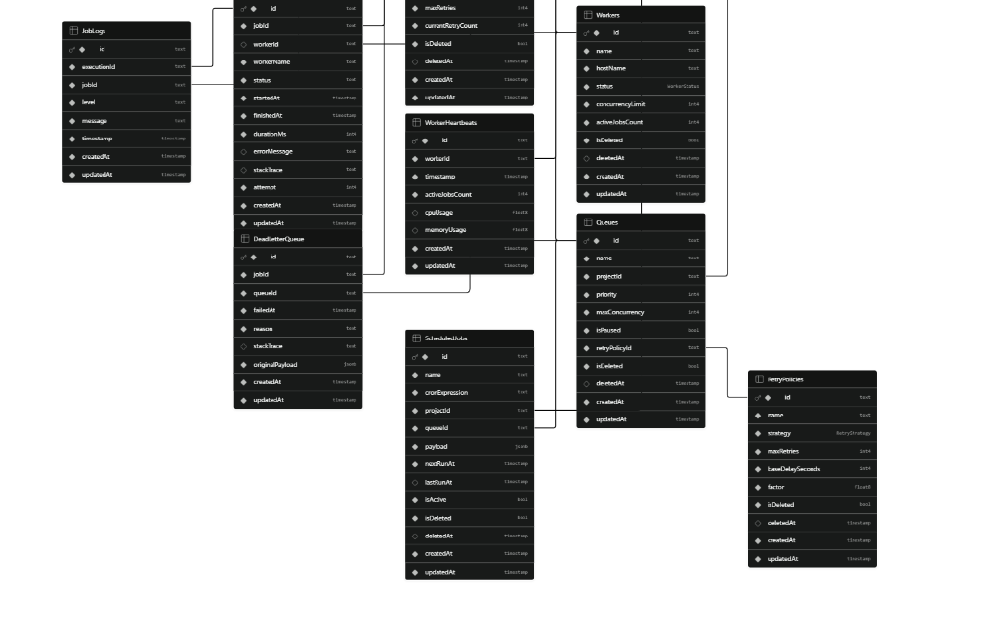
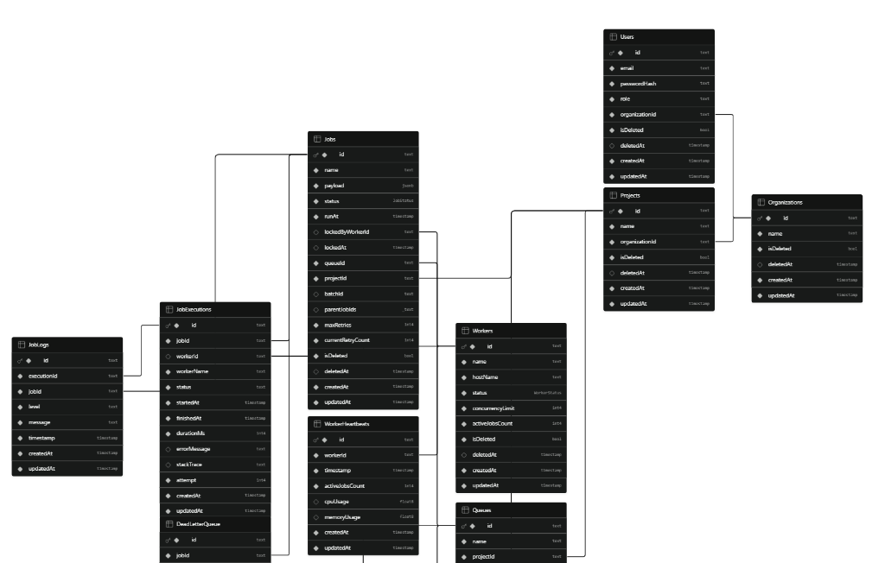
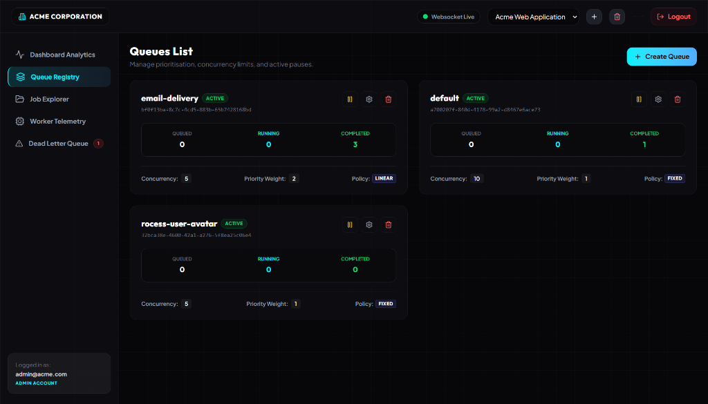
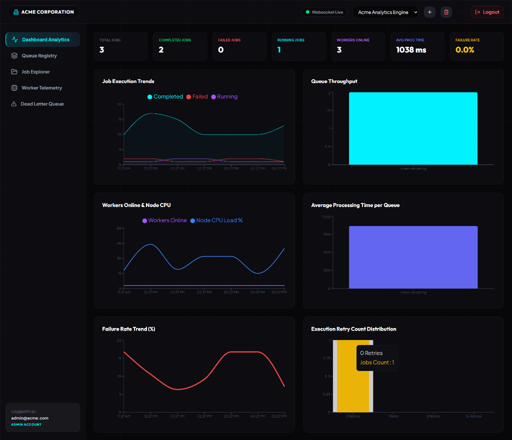

| Project Title | Codity - Distributed Multi-Tenant Job Scheduler & Worker Orchestrator |
|---|---|
| Tech Stack | Node.js, Express, TypeScript, Prisma, PostgreSQL (Supabase Cloud), React (Vite), TailwindCSS, Recharts, WebSockets |
| Live Dashboard URL | https://codity-dashboard.onrender.com |
| Live API URL | https://codity-api-mgto.onrender.com |
| GitHub Repository | https://github.com/DavePrakrut/distributed-job-scheduler |
| Demo Credentials |
Email: admin@acme.comPassword: Password123!
|
Codity is a production-inspired, highly available, and multi-tenant background task execution engine. It enables scheduling immediate, delayed, and recurring cron-based tasks across a cluster of background workers. The scheduler prioritizes reliability, concurrency safety, and transaction integrity. The system leverages raw PostgreSQL FOR UPDATE SKIP LOCKED transactions to guarantee race-condition-free, exact-once task consumption.
The system consists of independent component layers designed to decouple task ingestion from execution:
graph TD
UI["React SPA Dashboard"] -->|REST API Calls| Express["Express API Gateway"]
UI -->|Handshake Check| WSS["WebSocket Server Hub"]
Express -->|Prisma Client| DB[(PostgreSQL Database)]
WSS -->|Subscribe Projects| DB
subgraph Daemons ["Co-located Daemons"]
Scheduler["Scheduler Loop (node-cron)"]
Worker["Worker Loop (Concurrency Pool)"]
end
Scheduler -->|Promote Delayed / Spawn Cron| DB
Worker -->|SELECT ... SKIP LOCKED| DB
Worker -->|Trigger WebSockets Broadcast| WSS
The database design follows high-performance normalization guidelines, utilizing GUID primary keys and robust indexes to optimize query processing times.
The visual schemas below represent the entity-relationship constraints, primary keys (PK), foreign keys (FK), column types, and indices generated from the schema models:


onDelete: Cascade) are defined on Projects and Queues to ensure that deleting a queue automatically cleans up all associated jobs and executions, avoiding database orphan entries.JobExecutions and JobLogs tables.CREATE INDEX "idx_jobs_execution" ON "Jobs" ("projectId", "status", "runAt");
CREATE INDEX "idx_executions_jobId" ON "JobExecutions" ("jobId");To prevent race conditions where multiple workers grab the same job, Codity executes an atomic query using PostgreSQL's row-level locking mechanism:
UPDATE "Jobs"
SET "status" = 'RUNNING', "lockedByWorkerId" = $1, "lockedAt" = NOW()
WHERE "id" = (
SELECT j."id"
FROM "Jobs" j
JOIN "Queues" q ON j."queueId" = q."id"
WHERE j."status" = 'QUEUED'
AND j."runAt" <= NOW()
AND q."isPaused" = FALSE
AND (
SELECT COUNT(1) FROM "Jobs" rj
WHERE rj."queueId" = j."queueId" AND rj."status" = 'RUNNING'
) < q."maxConcurrency"
ORDER BY q."priority" DESC, j."createdAt" ASC
FOR UPDATE SKIP LOCKED
LIMIT 1
) RETURNING *;
To prevent double-triggering recurring cron schedules in highly available multi-scheduler configurations, we execute an atomic update checking the nextRunAt timestamp:
const updated = await tx.scheduledJobs.updateMany({
where: { id: schedule.id, nextRunAt: schedule.nextRunAt },
data: { lastRunAt: now, nextRunAt }
});
if (updated.count === 0) return; // Prevent double-executionTransient execution failures are handled gracefully using custom backoff delays:
| Retry Strategy | Backoff Math Formula | Description |
|---|---|---|
| Fixed Delay | Delay = BaseDelaySeconds |
Retries the task after a static configured delay. |
| Linear Backoff | Delay = BaseDelaySeconds * CurrentAttempt |
Increments delay linearly with each retry attempt. |
| Exponential Backoff | Delay = BaseDelaySeconds * (Factor ^ (Attempt - 1)) |
Increases delay exponentially to give backend systems time to recover. |
If a job fails permanently after exhausting all retries, it is automatically routed to the Dead Letter Queue (DLQ) with a snapshot of its payload, failure reason, and full stack trace.
| Method | Endpoint Route | Description |
|---|---|---|
POST |
`/api/auth/register` | Registers a new organization and administrator account. |
POST |
`/api/auth/login` | Logs in an administrator and returns a JWT access token. |
GET |
`/api/projects` | Lists all projects in the active organization. |
POST |
`/api/projects/:projectId/queues` | Creates a new job queue with concurrency limits and backoffs. |
POST |
`/api/projects/:projectId/jobs` | Enqueues a new background job with a JSON payload. |
GET |
`/api/projects/:projectId/jobs` | Lists jobs inside a project (supports pagination and state filters). |
POST |
`/api/jobs/:id/cancel` | Cancels a pending or running job. |
POST |
`/api/jobs/:id/retry` | Manually retries a failed job or DLQ record. |
SKIP LOCKED transaction capability allows us to reuse our existing SQL database infrastructure, maintaining ACID compliance and avoiding the cost of a dedicated Redis instance.Our critical backend business logic is covered by Jest tests, achieving **81.28% line coverage**:
PASS tests/services.test.ts
PASS tests/app.test.ts
PASS tests/auth.test.ts
PASS tests/project.test.ts
PASS tests/job.test.ts
PASS tests/queue.test.ts
PASS tests/middleware.test.ts
Test Suites: 7 passed, 7 total
Tests: 44 passed, 44 total
Lines: 81.28% CoveredBelow is your live Queue Registry panel, demonstrating your created queues and active WebSocket metrics connection:

Below is your real-time analytics panel displaying active node stats, throughput distributions, and failure rates:
